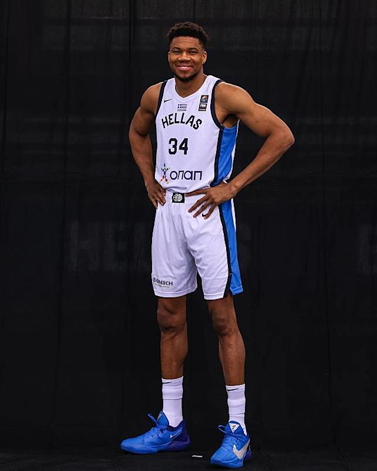

Milwaukee Bucks · Forward · #34
GIANNIS ANTETOKOUNMPO
Two-time MVP. NBA Champion & Finals MVP. Defensive Player of the Year. From selling trinkets on the streets of Athens to the most dominant two-way force in basketball.
CAREER ACCOLADES
Athens
to Milwaukee
Born in Athens, Greece to Nigerian immigrant parents. Shared a tiny room with his brothers, sold trinkets on the streets to survive. The hunger never left him.

From Sepolia to Milwaukee
Athens
Born December 6, 1994 in Athens, Greece. Parents Charles and Veronica emigrated from Nigeria. Giannis grew up sharing a cramped apartment with his brothers, selling sunglasses and trinkets on the streets. The struggle forged an unbreakable spirit.
Draft Night
Selected 15th overall in the 2013 NBA Draft by the Milwaukee Bucks. A lanky, raw 18-year-old with rare length, mobility, and an insatiable hunger to improve — the gamble that changed Milwaukee forever.
Superstar
Two-time MVP. Defensive Player of the Year. NBA Champion. Finals MVP. NBA Cup Champion. Through relentless development and an unbreakable will, he became one of the greatest to ever play the game.
Height
Forward size with guard agility. A physical profile that defies basketball logic.
Weight
Functional power. Absorbs contact and finishes through defenders with ease.
Wingspan
Elite defensive range. Erases shots from the weak side. A one-man defensive system.
Jersey
The number worn in Milwaukee since Day 1. Synonymous with Bucks basketball.
Playing
Identity
Transition Force
Eurostep freight train. Unstoppable in the open court. Defense collapses when he attacks the paint in transition.
Rim Pressure
Leads the league in points in the paint. A gravitational force that warps every defensive scheme and collapses help defenders.
Defensive Range
1-through-5 switchability. 7′3″ wingspan erases shots from the weak side. Anchors one of the league's elite defenses.
Relentless Motor
Never takes a possession off. From Sepolia's streets to the NBA mountaintop — the engine never stops running.
Career
Timeline
Drafted by Milwaukee
15th overall pick. A lanky 18-year-old from Greece with rare physical tools and an insatiable hunger. The Bucks took a gamble on raw upside — it paid off beyond imagination.
Most Improved Player
Breakout season. Averaged 22.9 PPG on 52.1% shooting. First All-Star selection. The league takes notice of the Greek Freak.
First NBA MVP
27.7 PPG · 12.5 RPG · 5.9 APG. Led the Bucks to 60 wins. From raw prospect to the league's most valuable player in six seasons.
MVP + DPOY
Joined Michael Jordan & Hakeem Olajuwon as the only players in NBA history to win MVP and Defensive Player of the Year in the same season. Historic two-way dominance.
NBA Champion + Finals MVP
50 PTS · 14 REB · 5 BLK in the close-out Game 6. Delivered Milwaukee its first championship in 50 years. A legend sealed forever.

NBA Cup Champion + Cup MVP
Led the Milwaukee Bucks to the 2024 NBA Cup title with a dominant tournament performance. Named the inaugural NBA Cup MVP.
10× All-Star · Continued Greatness
10th All-Star selection. 9× All-NBA. 5× All-Defensive. The legacy expands with each passing season as one of the most decorated players of this era.

The Greek
Freak DNA
Length
7′3″ wingspan. Covers space like few players in NBA history. Defensive range that breaks opposing schemes.
Power
Downhill force. Contact finisher. Paint destroyer. Generates more points in the restricted area than any forward in the league.
Speed
A near seven-footer who runs the floor like a guard. Coast-to-coast in three dribbles. Transition devastation unmatched at his position.
Motor
Relentless pressure on both ends. Never takes a possession off. From Sepolia's streets to the NBA mountaintop — the drive never fades.
Career
Statistics
A rare statistical profile: primary scorer, elite rebounder, transition engine, and defensive anchor. Few players in NBA history have posted this combination of volume, efficiency, and versatility over a sustained prime.
Career stats reference: NBA.com / ESPN / Basketball Reference · Regular season through 2025–26
Highlights
& Gallery
Relive the most dominant performances. Browse high-resolution wallpapers capturing iconic moments in the career of the Greek Freak.
Explore Full Media Page